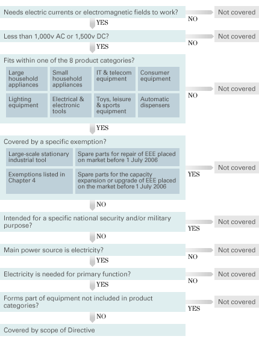

Building Automation
Industrial Automation
Power Automation & Safety


Bangladesh Distributor
 Models with Standards Certification
Models with Standards Certification
- Outline of Major Standards
- Efforts to Comply with the RoHS Directive
- California Regulations Concerning Perchlorate
- Guide to the China Compulsory Certification System
Efforts to Comply with the RoHS Directive
RoHS Directive
RoHS Directive
The RoHS Directive refers to Directive 2002/95/EC of the European Parliament and of the Council of 27 January 2003 on the restriction of the use of certain hazardous substances in electrical and electronic equipment.
This directive prohibited the sale of any new electrical and electronic equipment containing more than the allowable levels* of lead, mercury, cadmium, hexavalent chromium, PBB (polybrominated biphenyl), or PBDE (polybrominated diphenyl ether) after July 1, 2006.
- [Note]
-
- *:Refer to section 5. Maximum Allowable Concentrations of the 6 RoHS Regulated Substances.
Objectives
The purpose of this Directive is to approximate the laws of the Member States on the restrictions of the use of hazardous substances in electrical and electronic equipment and to contribute to the protection of human health and the environmentally sound recovery and disposal of waste electrical and electronic equipment.
Applicable Scope
The applicable products are those in categories 1 to 7 and category 10 below. As of February 2006, medical equipment (category 8) and monitoring and control equipment (category 9) are exempt. Spare parts for repairing electrical and electronic equipment, and reused components, sold prior to July 1, 2006, are also exempt.
| Category | Applicable products | Note | |
|---|---|---|---|
| 1 | Large home appliances | Refrigerators, freezers, washing machines, clothes dryers, dishwashers, etc. | |
| 2 | Small home appliances | Vacuum cleaners, knitting machines, irons, toasters, clocks, etc. | |
| 3 | IT and telecommunications equipment | Mini computers, personal computers, printers, cellular phones, etc. | |
| 4 | Consumer equipment | Radios, TVs, video cameras, audio amps, etc. | |
| 5 | Lighting equipment (including light bulbs and home lighting fixtures) | Fluorescent lamps, halogen lamps, high-/low-pressure sodium lamps, etc. | |
| 6 | Power tools (excluding large, mounted tools) | Electric drills, power saws, milling machines, lawn mowers, etc. | |
| 7 | Toys, leisure, and sports equipment | Toy electric trains, car racing sets, video games, slot machines, etc. | |
| 8 | Medical equipment | Radiation therapy equipment, dialysis equipment, artificial respirators, etc. | Exempt |
| 9 | Monitoring and control equipment | Smoke detectors, monitoring and control equipment for factories, etc. | Exempt |
| 10 | Automatic vending machines | Hot drink vending machines, bottle/can vending machines, ATMs (automated teller machines), etc. |
The products that IAB handles include equipment such as PCB inspection devices, which are finished products, and sensors and other equipment, which are assembled into other electrical and electronic equipment for use. Our finished products fall into category 9, so they are exempt from the RoHS Directive as of April 2007. Products such as sensors that are assembled into other equipment for use do not fall into any of the categories, so they are essentially exempt from the RoHS Directive, but care must be taken because they may become subject to the RoHS Directive depending on the category of the finished product into which they are assembled.
Exempted Applications
The following are recognized as exempted applications.
(Published as 2002/95/EC in the Official Journal dated February 13, 2003; 2005/717/EC in the Official Journal dated October 15, 2005; 2005/747/EC in the Official Journal dated October 25, 2005; 2006/310/EC in the Official Journal dated April 28, 2006; 2006/690/EC, 2006/691/EC, 2006/692/EC in the Official Journal dated October 14, 2006; with revisions and additions presently under consideration.)
29 Items are permitted at this present moment(April 2007), and listed below are the major items. For details, please confirm the Official journal.
- Mercury in compact fluorescent lamps not exceeding 5 mg per lamp.
- Mercury in straight fluorescent lamps for general purposes not exceeding:
- Halophosphate : 10 mg
- Triphosphate with normal lifetime : 5 mg
- Triphosphate with long lifetime : 8 mg
- Mercury in straight fluorescent lamps for special purposes.
- Mercury in other lamps not specifically mentioned in this Annex.
- Lead in glass of cathode ray tubes, electronic components and fluorescent tubes.
- Lead containing a maximum of 0.35 wt% lead, aluminum containing a maximum of 0.4 wt% lead, and copper alloys containing a maximum of 4 wt% lead as an alloy component.
- Lead included in
- High melting temperature type solders (i.e. lead-based alloys containing 85 % by weight or more lead).
- Solders for servers, storages and storage array systems, network infrastructure equipment for switching, signaling, transmission as well as network management for telecommunications.
- Electronic ceramic parts.(e.g. piezoelectric devices)
- Cadmium and cadmium composites contained in electrical contacts, and cadmium and cadmium composites contained in cadmium surface treatment, except for applications prohibited by Revised Directive 91/338/EEC for Directive 76/769/EEC concerning restrictions on the sale and use of certain hazardous substances and preparations.
- Hexavalent chromium as an anti-corrosion of the carbon steel cooling system in absorption refrigerators.
- DecaBDE in polymeric applications.
- Lead in lead-bronze bearing shells and bushes.
- Lead used in compliant pin connector systems.
- Lead as a coating material for the thermal conduction module c-ring.
- Lead and cadmium contained in optical or filter glass.
- Lead in solders that consist of more than two elements for the connection between the pins and the package of microprocessors with a lead that contains more than 80 % and less than 85 % by weight.
- Lead in solders to complete a viable electrical connection between semiconductor die and carrier within integrated circuit Flip Chip packages.
- Lead oxide in glass used for bonding front and rear substrates of flat fluorescent lamps used for Liquid Crystal Displays (LCD).
- Lead and cadmium in printing inks for the application of enamels on borosilicate glass.
- Lead in finishes of fine pitch components other than connectors, with a pitch of 0.65 mm or less with NiFe lead frames. Lead in finishes of fine pitch components other than connectors with a pitch of 0.65 mm or less with copper lead frames.
- Lead in solders for the soldering to machine through hole discoidal and planar array ceramic multilayer capacitors.
Maximum Allowable Concentrations of the 6 RoHS Regulated Substances
The maximum allowable concentrations are as shown below, regardless of whether or not the substances have been intentionally added. (2005/618/EC in the Official Journal dated August 18, 2005)
| Regulated substance | Maximum allowable concentration |
|---|---|
| Cadmium | 100 ppm |
| Mercury | 1,000 ppm |
| Lead | 1,000 ppm |
| Hexavalent chromium | 1,000 ppm |
| PBB (polybrominated biphenyl) | 1,000 ppm |
| PBDE (polybrominated diphenyl ether) | 1,000 ppm |
These maximum allowable concentrations are weight ratios for homogeneous material. Homogeneous material refers to a material that cannot be mechanically separated into constituent materials.
(Reference) Decision Tree
A “decision tree” that could be used by producers to decide whether or not a product might come within the scope of the RoHS Regulations.
Quote from DTI's RoHS regulations: Government guidance notes 2007.

Efforts to Comply with the RoHS Directive for Eliminating Regulated Substances by Industrial Automation Company (hereinafter referred to as the Company) of OMRON Corporation
Goals for Eliminating the 6 RoHS Regulated Substances
While the products handled by the Company are exempt from the RoHS Directive, we have set the goal of eliminating the 6 RoHS regulated substances from all OMRON brand (the Company) products by the end of March 2006, and are voluntarily proceeding to prohibit the use of the 6 regulated substances in all products.
However, in addition to the exempted applications recognized by the RoHS Directive, The Company also considers the following products to be exceptions.
- Products for which technical problems exist such that the act of prohibiting regulated substance use would pose remarkable difficulties in ensuring the safety or reliability of the product.
- Products that are exclusively manufactured for sale to specific customers whose business operations are of a nature that ensures the products will not be shipped to any country in which the substances are regulated.
- Products with specifications that ensure they will be sold only in countries other than the countries in which the substances are regulated.
Efforts to Eliminate the 6 RoHS Regulated Substances
Because we need to gain the cooperation of all our global suppliers in order to eliminate the 6 RoHS regulated substances, we will perform the following activities while working to gain this cooperation.
- We will conduct a survey starting in fiscal 2003 to determine the regulated substances contained in parts and materials, based on a manual for surveying the substances contained in OMRON parts and materials. As of April 2007, the survey for supplied parts and materials have completed.
- We will have all suppliers input the necessary information on parts, raw materials, etc., into Rechs (the restricted chemical substances gathering management system) for collection over the Internet, and we will perform product development in an environment that is guaranteed by using that data.
- An original OMRON green supplier certification system will be introduced, and parts and materials will be purchased from certified suppliers.
The following activities will also be conducted inside OMRON:
- E-Warps (the environmentally warranted products design support system) will be used to support all design work based on data from our suppliers in order to perform product development (globally) in an environment guaranteed by E-Warps usage.
- Instead of the previous system in which designers mainly performed their own checks, a system will be constructed wherein a third party other than the designers will review and guarantee designs based on evidence output by E-Warps showing the absence of regulated substances in products.
Technologies for Eliminating Lead
Lead-free Solder
From the viewpoint of reliability and productivity, we have selected lead-free Sn-Ag-Cu or Sn-Cu solder materials, or Sn-Ag-Cu or Sn-Cu solder materials to which trace elements have been added.
Process Technologies
Because the melting temperature of lead-free solder is approximately 30 degrees higher than conventionally used eutectic solder, we have installed devices that exhibit little temperature fluctuation in reflow and flow processes. We are also using special soldering irons for manual soldering, and have organized process control standards and work standards for each device used.
Lead-free Plating
In determining the plating to be used for relay, switch, and connector terminals, we consider the viewpoints of solder wettability, whisker prevention, long-term connection reliability, heat resistance, etc., and select either Sn-Cu, pure Sn, Sn reflow, or gold plating to match the functions and performance of each product.
Efforts for RoHS-compliant Products
Distinguishing RoHS-compliant Products
While conducting the above-described activities and working to gain the cooperation of our suppliers in order to eliminate the 6 RoHS regulated substances, we are indicating compliance by using the RoHS compliance mark based on the following considerations.
Products that Comply with the RoHS Directive
Products (those in which regulated substances have been eliminated within processing and in PCB-mounted electronic components) in which the 6 RoHS regulated substances have been eliminated: The RoHS compliance mark is indicated on the package.
Compliance mark
- [Note]
-
- *:This mark must sometimes be removed when, due to supplier circumstances, a part that was considered to be RoHS-compliant turns out to be non-compliant.
Products that Do Not Comply with the RoHS Directive
Products belonging to the previously described exceptions, or products in which the 6 RoHS regulated substances have been eliminated in processing, but not in the PCB-mounted electronic components: No RoHS compliance mark is indicated on the package.
For products in which the PCB-mounted electronic components are not RoHS-compliant, the component manufacturer is requested to take the necessary steps for compliance, and once compliance is achieved, the products are manufactured as RoHS-compliant products.
Judgment Criteria
The following criteria are used to determine whether the 6 RoHS regulated substances have been sufficiently eliminated.
| Regulated substance | Maximum allowable concentration |
|---|---|
| Cadmium | 100 ppm |
| Mercury | 1,000 ppm |
| Lead | 1,000 ppm |
| Hexavalent chromium | 1,000 ppm |
| PBB (polybrominated biphenyl) | 1,000 ppm |
| PBDE (polybrominated diphenyl ether) | 1,000 ppm |
- [Note]
-
- These criteria do not apply to items that are exempted from the RoHS Directive.
Related Contents